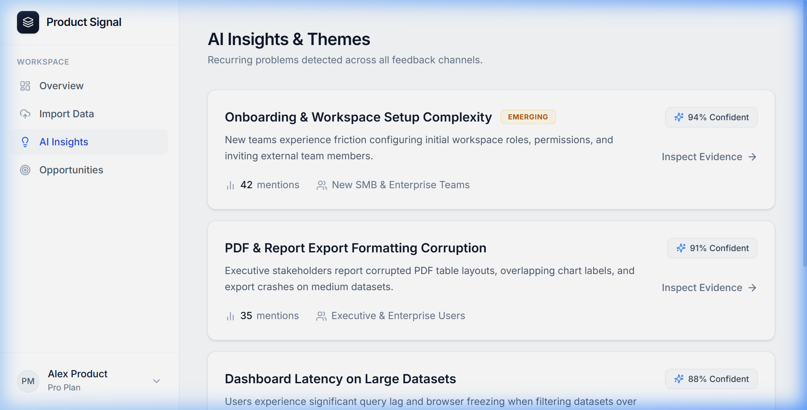
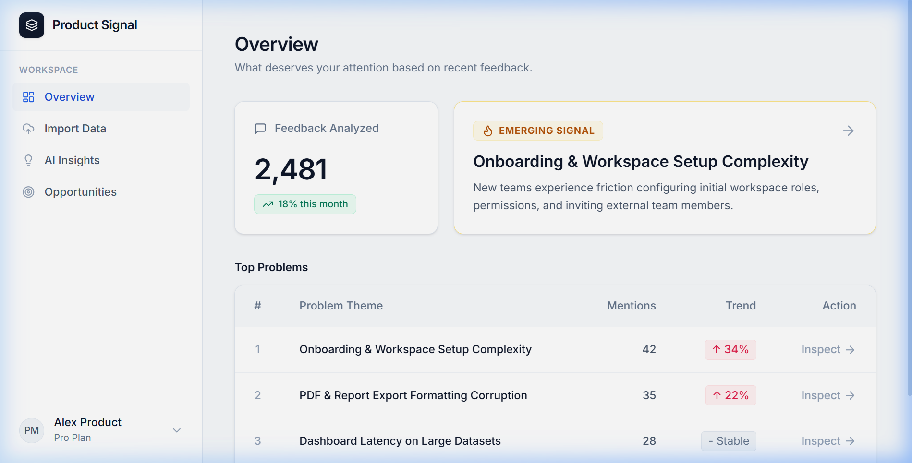
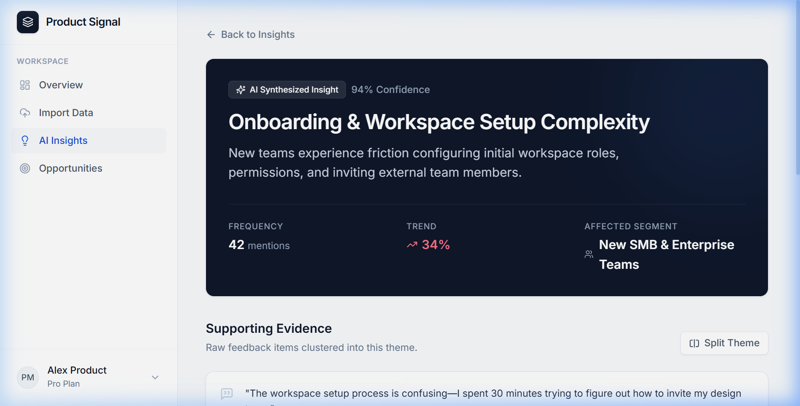

Turning Scattered Customer Feedback into Clearer Product Decisions
An AI UX design project exploring how intelligent UI synthesis can help product managers spend less time on manual feedback analysis and more time making product decisions.
1. The Problem
PMs waste time sorting feedback before making decisions.
2. The Objective
Turn scattered feedback into organized, AI-assisted insights.
3. UX Principle
AI is the assistant. The PM remains the decision maker.
PMs Waste Time Sorting Feedback Before Making Decisions
Product managers receive customer feedback from different sources (Zendesk tickets, app reviews, Gong calls, and surveys). Before they can make product decisions, they often spend significant time collecting, sorting, and understanding that feedback.
"The challenge is not simply having too much feedback. It is turning that feedback into something useful for deciding what to do next."
UX Bottleneck Comparison
High FrictionHelp PMs Spend Less Time Sorting, More Time Deciding
I wanted to explore how AI could help PMs spend less time on manual feedback analysis and more time making product decisions.
"My design objective: Save PMs time by turning scattered feedback into organized, AI-generated insights that support faster prioritisation."
Core UX Principle
The AI is not the decision maker. The PM remains responsible for deciding what to prioritise, deprioritise, or investigate further.
Assistive UX Division of Responsibilities
Organises raw feedback, identifies recurring themes, drafts problem summaries, and links insights to source feedback.
Reviews source evidence, verifies insight context, and decides what to prioritise, deprioritise, or investigate.
From Messy Feedback to a Clearer Understanding
Import Feedback
The PM uploads or imports the feedback they want to analyse.
Generate Insights
Product Signal organises feedback and generates AI insights.
Review Evidence
The PM reviews the insight and its source feedback quotes.
Make Decision
PM decides what to prioritise, deprioritise, or investigate further.
AI Insights — Demonstrating Core Value

Why Lead With This Screen?
I would lead with the AI Insights screen because it shows how raw feedback becomes evidence-backed insights to support prioritisation.
The insight is the processed output. The feedback is the raw material.
Why I Used Cards for Insights

Grouped Information Units
Each insight contains multiple pieces of information (Headline, Description, Confidence, Mentions, Trend, Evidence).
"I used cards because each insight contains multiple pieces of information, and grouping them together makes the insights easier to read and scan."
Assistive AI, Not Authoritative

AI Insights Are Not Automatically Correct
My approach is to make the AI assistive rather than authoritative. Each insight is linked to its source feedback, so the PM can review evidence before deciding.
"The AI supports the insight, but the PM verifies the source feedback before deciding. This is a design choice, not a claim that the AI is perfectly accurate."
Assumption-Driven Project & Testing Plan
Project Context
This project is assumption-driven. I have not conducted real user testing yet.
Validation Question
If a PM currently spends several hours sorting and analysing feedback, I would compare that with the time and effort required using Product Signal.
The question is not just whether the AI generates insights. The question is whether the product creates a meaningful improvement in the PM's workflow.
Outcome First, Not Feature First
Shift in Design Thinking
Core Learning
"A feature is not valuable just because it exists. It is valuable when it helps the user achieve something important."
AI insights are the feature. Saving PM time is the outcome. That distinction changed how I think about product design.
AI UX Designer — End-to-End Ownership
Project Scope & UX Focus
- • Understanding the user problem space.
- • Defining user and business objectives.
- • Designing the main workflow & information structure.
- • Exploring how AI can support human decision-making.
UX Design Responsibility
I used AI to help build the working product concept, but the UX design decisions, trade-offs, and product thinking were strictly my responsibility.
Turn Scattered Feedback into Clearer Product Decisions, Faster.
Product Signal is not about replacing the PM. It is about helping the PM spend less time manually analysing feedback and more time making decisions.
Satyam Manik
AI UX DesignerAI UX design project exploring intelligent feedback analysis and human-AI decision interaction.
Available for AI UX Design Roles